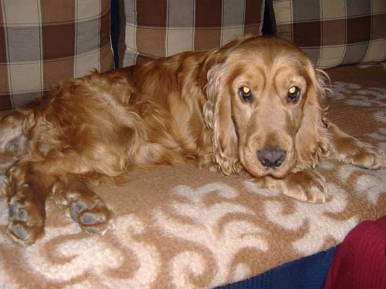

AZ ÖRÖKBEFOGADÁS MENETE
Hogyan fogadhatsz örökbe kutyát a Spánielmentéstől?
VANNAK SZABÁLYAINK:
E szabályokat lehet jónak tartani, lehet mondani, hogy kissé körülményesek, sőt, lehet szidni és emiatt elfordulni tőlünk. DE.
Mi megtanultuk, hogy ezek azok a szabályok, amik alól a kivételek nem erősítik azt. Már csak azért sem, mert életekkel „dolgozunk”.
1. A gondolat
Megfogalmazódik örökbefogadó-jelöltünk fejében a gondolat, hogy szeretne egy kutyát.
A „miért” ebből a szempontból lényegtelen, a fontos az, hogy szeretne egy Családtagot.
Így, nagy betűvel. Nem házőrzőt, nem kerti díszt, hanem egy olyan Családtagot, aki részt vesz a mindennapjaiban, akivel együtt lehet nagyokat sétálni, labdázni, kertészkedni, majd este fáradtan TV-t nézni.

2. Valahol meglátni és megszeretni egy kutyánkat
Ez bizony nem nehéz, mert mind, egytől egyig gyönyörű, a maga nemében kedves és főnyeremény. Mégsem való mindenkihez minden kutya. Ezért írunk rövid jellemzést, és ezért írjuk le azt is, hogy milyen családot tartunk ideálisnak.
3. Ha meg van a nagy Ő
Ha megvan a kiválasztott spániel, esetleg 2, akkor fel kell hívni a kutyá(k)hoz tartozó telefonszámot.
SMS-ekre, emailekre és főleg visszahívást kérő SMS-ekre nem fogunk reagálni.
Ugyanis levélben nem lehet beszélgetni. Márpedig mi szeretnénk elbeszélgetni a gazdijelöltekkel, mielőtt bármiben megegyeznénk.
Lehet, sokat foglalt a telefon, de hétvégén, ünnepnap, munkanapokon késő estig elérhető, tehát nem reménytelen.
(És a visszahívás nekünk is pénzbe kerül, így bármennyire sajnálatos, ha valakinek nincs egység a telefonján, nekünk sincs korlátlan ingyen telefonálási lehetőségünk.
Azt a kevés pénzt pedig, amit megkeresünk, a kutyákra fordítjuk, nem a visszahívásokra).
4. Ha sikeresen vette örökbefogadónk az akadályt
Ha túl vagyunk a sikeres telefonbeszélgetésen, megegyezünk egy személyes találkozóban.
Mindenkivel, aki a kutyával együtt fog élni. Nem a szülőkkel, mert ajándék lesz a gyereknek, nem a gyerekkel, mert ajándék lesz az anyukának.
Ugyanis kutyáink nem ajándékok. Legalábbis nem olyan ajándékok, akivel a megajándékozott nem találkozik, mielőtt megkapná.
Kutyáink érző, gondolkodó lények.
Van egy előéletük és van egy elképzelésük a világról. Nem tudhatjuk sosem, mit éltek meg, mielőtt hozzánk kerültek.
Lehet rossz emlékük egy hang, egy illat kapcsán, melyet mi csak akkor veszünk észre, amikor az örökbefogadó eljön és találkoznak, a kutya pedig félelemmel reagál.
Kutyáinknak személyiségük van, és célunk, hogy az ehhez legmegfelelőbb családot válasszuk ki.
Sokszor megkapjuk, hogy akkor nem is kell a kutya a családnak, „dögöljön meg nálunk„.
Köszönjük ezeket a kívánságokat, de nem célunk kutyáink pórázát az első jelentkező kezébe nyomni, ugyanis mi nem szabadulni szeretnénk a kutyáinktól, hanem biztonságban, szeretetben tudni.
És azt is kérjük, ha van másik kutya a családban, Ő is jöjjön el, hogy láthassuk, hogyan reagálnak egymásra.
Mert lehet, hogy jó ötletnek tűnik egy társ a meglévő kutyus mellé, de lehet, a meglévő kutyádnak erről más a véleménye.
5. A találkozó után üres kézzel, azaz kutya nélkül megy haza a család
Otthon átgondolja a látottakat, átbeszélhetik újra, valóban felkészültek-e egy kutya befogadására. Ha igen, ha tudják-e, ki fog reggel felkelni megsétáltatni, ki fogja este, az utolsó sétára levinni, ha megvan, melyik állatorvoshoz fognak járni, hova mennek nyaralni, ahova a Kiválasztottat is vihetik. És ha minden adott az érkezésre (azaz, CROCS 🙂, tálak, ágy, táp, póráz, nyakörv, kefe, fésű, játékok és még sorolhatnánk…), készen várják az új családtagot, akkor mi házhoz fogjuk szállítani a Kiválasztottat. Hisz a gyerek érkezésére is felkészülünk, nem akkor kezdünk el rohangálni, mikor megszületett, és jut eszünkbe gyerekágyat venni. Ugyanilyen felkészülten kell várni egy kutyát! Hogy amikor megérkezik, már minden készen várja, hogy érezhesse: hazaért!
6. Az időpont
A házhozszállítás időpontját úgy egyeztetjük, hogy pár napig minden a Kiválasztott körül foroghasson, hisz nagy változás ez mind az Ő, mind a család életében.
Fontos, hogy ez nyugalomban történhessen, ne rohanó hétköznapokon, amikor másnap már rá is zárják az ajtót, mert menni kell dolgozni/iskolába…
Ez alkalommal megnézzük, a Kiválasztott mennyire érzi otthonosan magát, valóban van-e biztonságos kerítés, ha van másik Élőlény, akkor ŐK kölcsönösen elfogadják-e egymást,
vagy legalábbis van-e remény az összeszoktatásra nagyobb lelki sérülések nélkül.
Átadjuk a Kiválasztott spániel egészségügyi kiskönyvét és aláírunk egy szerződést.
Nem kérünk sokat, csak annyit, hogy szeressék és gondozzák a Kiválasztottat élete végéig, és valamennyire részesei maradhassunk az életének.
Kapjunk néha híreket – legyen az jó, vagy rossz, kapjunk fotókat arról, hogyan tengeti mindennapjait.
Hisz a Kiválasztott magával viszi szívünk egy darabját. Velünk élt, együtt vészeltünk át sok jót és sok rosszat. Lehet, csak hetekig,
de lehet, hogy hónapokig, évekig volt életünk része és volt fontos számunkra. Nem azért adjuk örökbe, mert nem szerettük, mert meguntuk,
hanem azért, mert azt szeretnénk látni, hogy valahol, valakinek Ő nagyon fontos és mindent elkövetnek azért, hogy Ő boldog és kiegyensúlyozott legyen.
Nekünk ez a „fizettség” a munkánkért: az Ő boldogságuk, az Ő örömük.
Sajnos az utóbbi hetekben próbáltunk lazítani a szabályokon, egy-egy pontot átugrottunk, és bizony ennek a Kutya látta kárát.
Így újra elővesszük a drákói szigort, újra vaskalaposan ragaszkodunk ezekhez a pontokhoz, mégha ezzel lassítjuk is az örökbeadás menetét,
mégha ezzel akár az Örökbefogadóknak, akár magunknak szerzünk plusz munkát, plusz költséget.
És akinek tényleg fontos a Kutya, az meg fogja érteni ezt!
SpanciManci